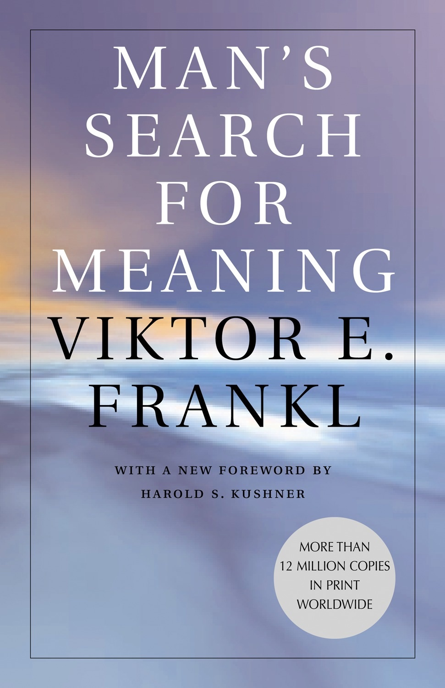
Viktor Frankl
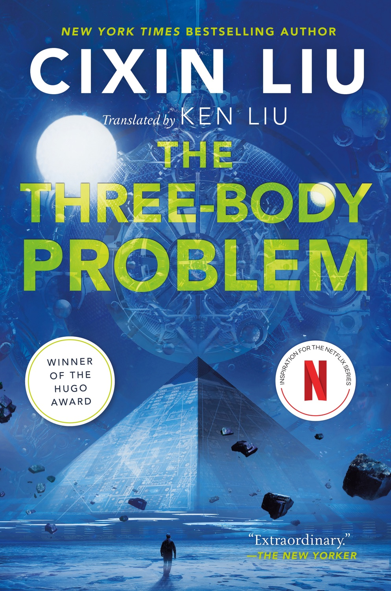
Liu Cixin
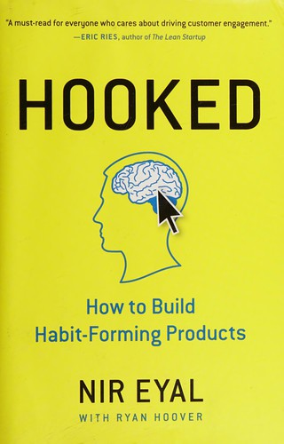
Nir Eyal
Vernor Vinge
Eric Berger

Mihaly Csikszentmihalyi
Jimmy Soni
Annie Jacobsen
Hermann Hesse
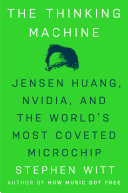
Stephen Witt
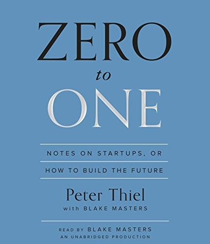
Peter Thiel
Iain M. Banks

James Clear
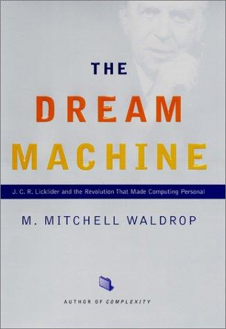
M. Mitchell Waldrop

Paul Kalanithi

Nick Bostrom
Ashlee Vance
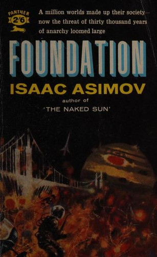
Isaac Asimov
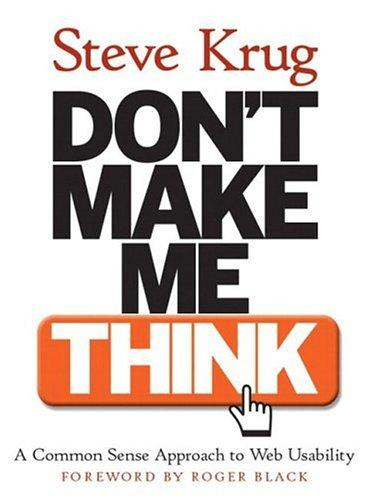
Steve Krug
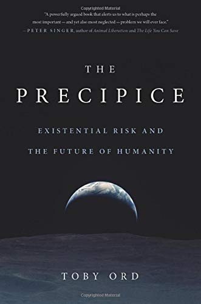
Toby Ord
Brent Schlender & Rick Tetzeli
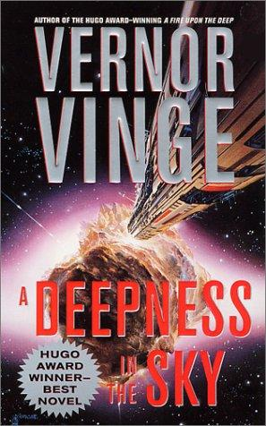
Vernor Vinge
Rob Fitzpatrick

Liu Cixin
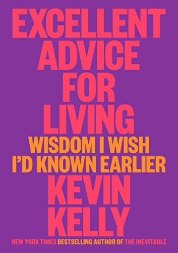
Kevin Kelly
Greg Egan
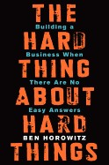
Ben Horowitz
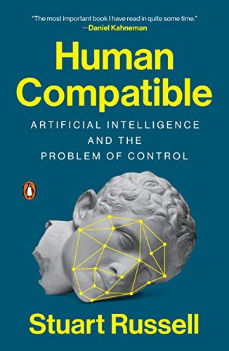
Stuart Russell
Eric Berger
Eknath Easwaran

Iain M. Banks
Brian McCullough

Malcolm Gladwell

Benjamin Labatut
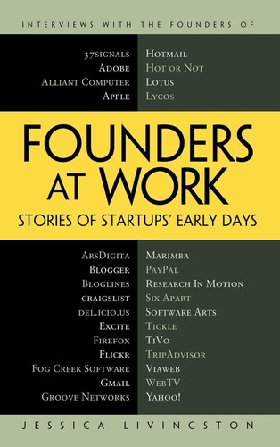
Jessica Livingston

Max Tegmark
Walter Isaacson
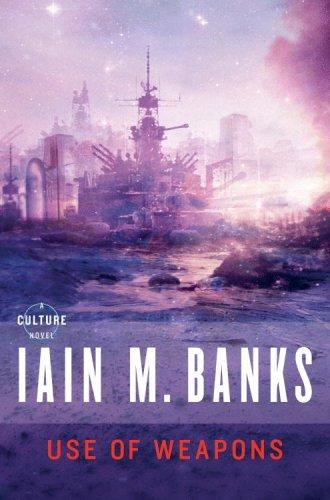
Iain M. Banks

Brian Christian
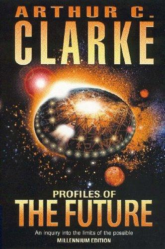
Arthur C. Clarke

Walter Isaacson
Kenneth Stanley & Joel Lehman

Liu Cixin
BJ Fogg
Vinay Sitapati
qntm

Anders Ericsson
David Foster Wallace

Clayton Christensen
Byrne Hobart & Tobias Huber
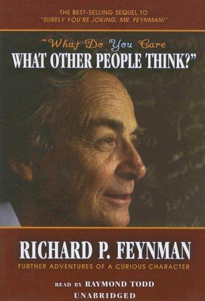
Richard Feynman

Phil Knight

Richard Dawkins
Charlie Munger